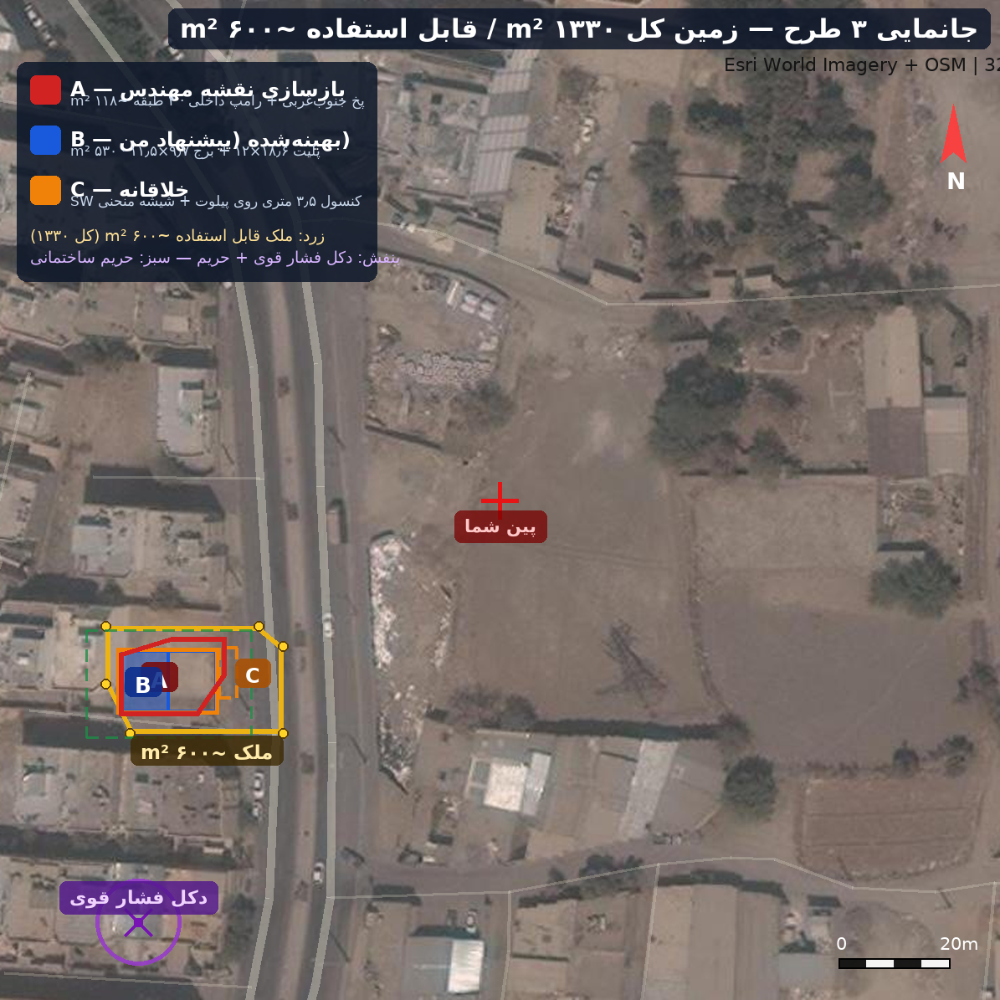
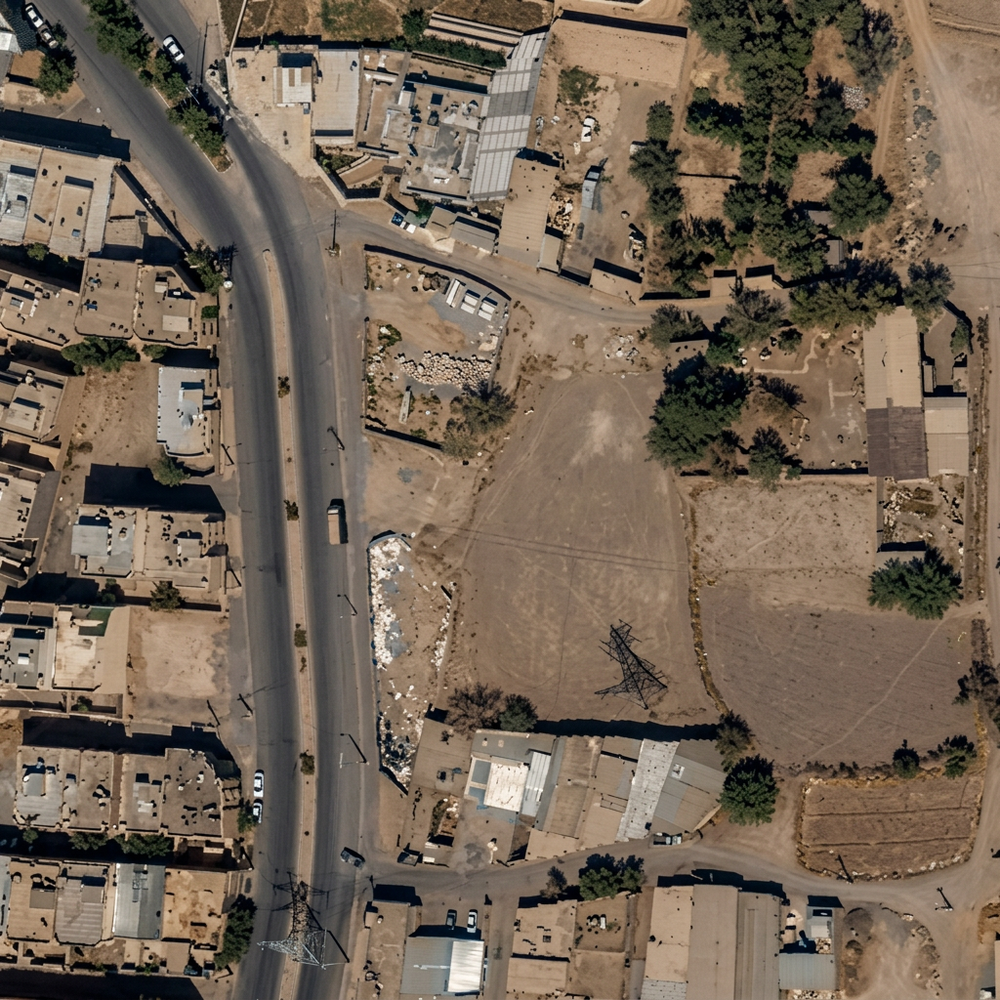
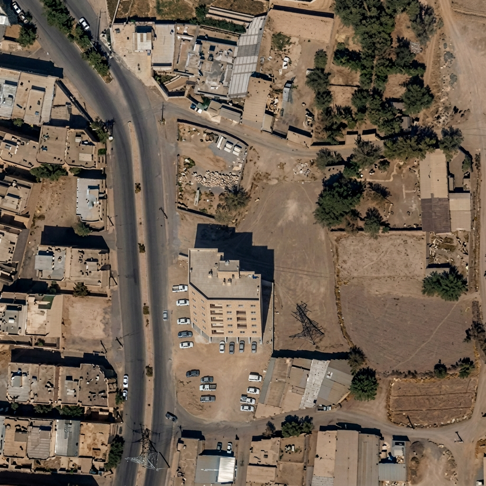
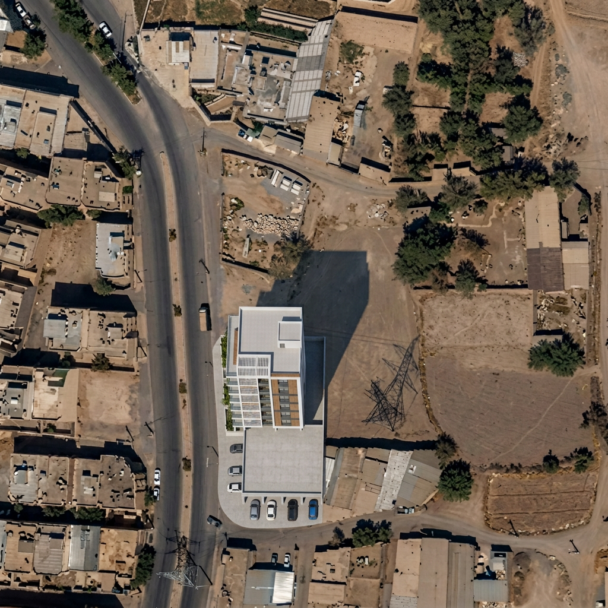
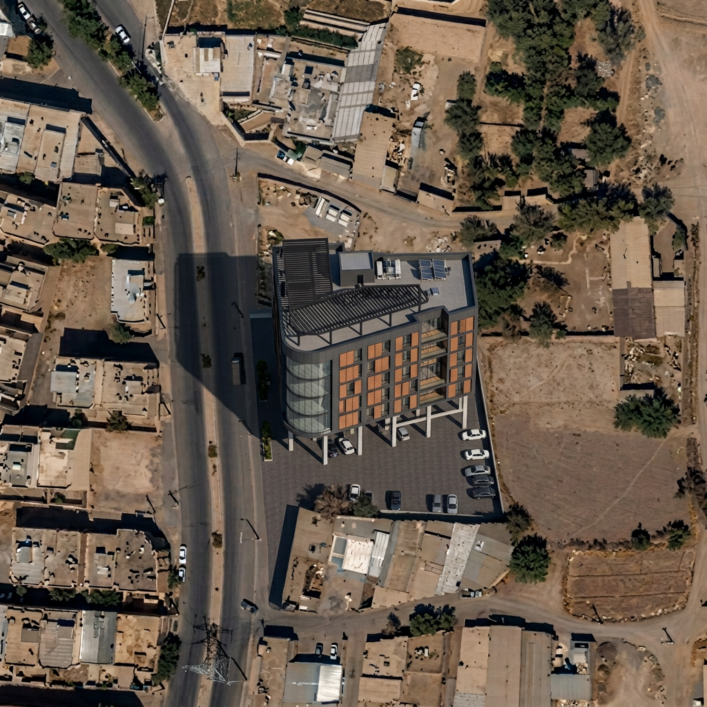
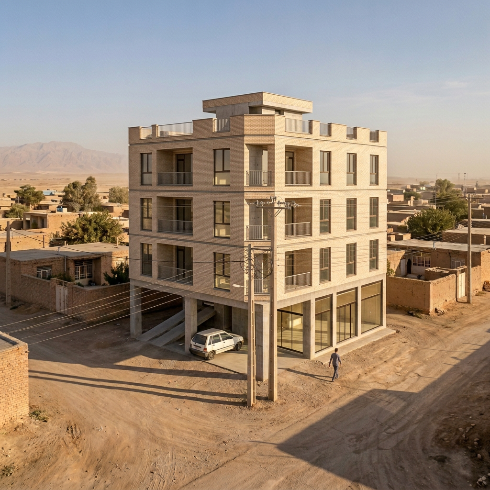
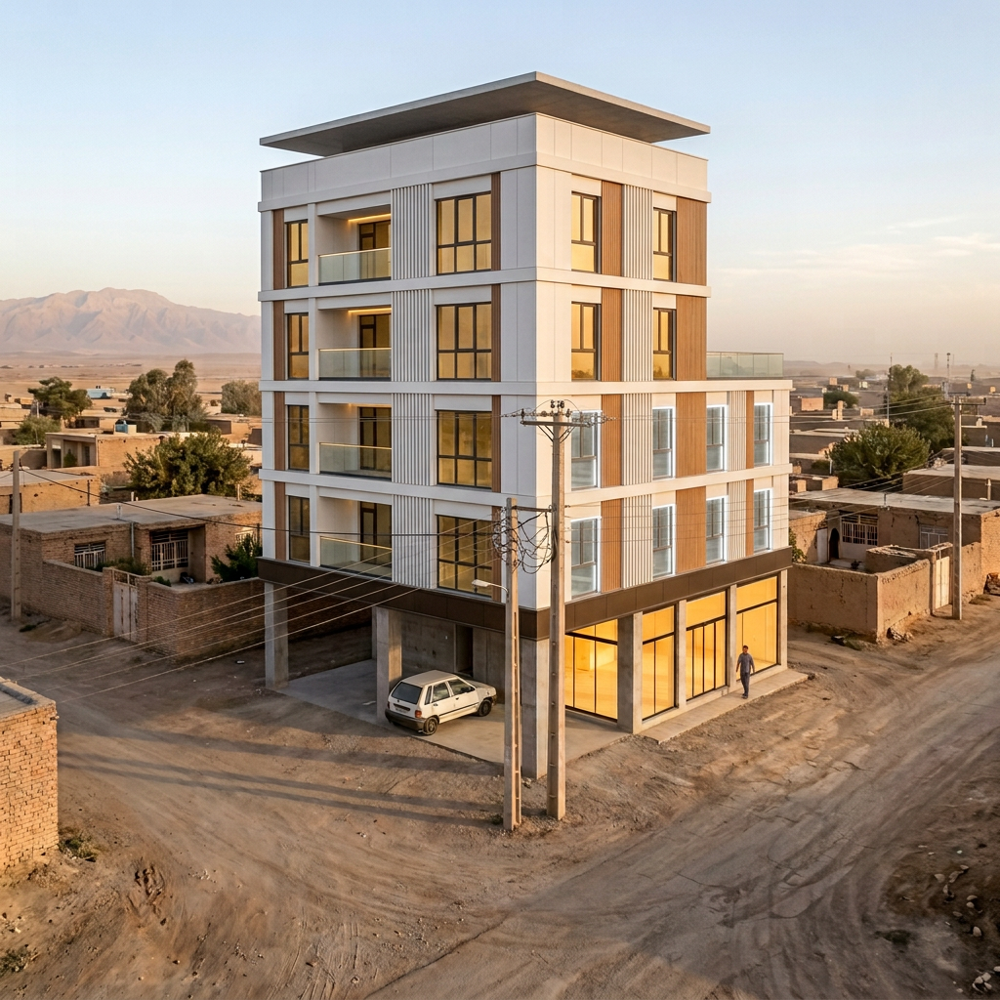

⚡ توجه حیاتی: بخش شمالی ملک اولیه (~۱۳۳۰ m²) بهدلیل دکل و خط فشار قوی و حریم آن غیرقابل ساخت است؛ نوار قابلساخت ~۶۰۰ m² در جنوب با فاصله امن از محور خط. هر سه طرح فقط در نوار امن جانمایی شدهاند.

جانمایی سه طرح روی عکس هوایی واقعی — زرد: ملک قابل استفاده ~۶۰۰ m² | بنفش: دکل فشار قوی + حریم | قرمز A: بازسازی نقشه مهندس | آبی B: بهینهشده | نارنجی C: خلاقانه با کنسول

وضع موجود — عکس هوایی واقعی Esri از زمین (بدون گرافیک)؛ دکل فشار قوی پایین-چپ کادر

A — بازسازی نقشه مهندس (هوایی): بیلدینگ با پخ جنوبغربی ۴۵°، پیلوت باز + رامپ، طبقات با پنجرههای منظم

B — بهینهشده (هوایی): پلیت پیلوت ۲۲۳ m² + برج ۹٫۷×۱۱٫۵ در غرب؛ بیشترین فاصله از دکل و حداکثر نور جنوبی

C — خلاقانه (هوایی): کنسول ۳٫۵ متری رو به تلاقی + شیشه منحنی گوشه جنوبغربی

A — نمای خیابانی: آجر بژ، بالکنهای تو رفته، متد متعارف اجرایی

B — نمای خیابانی مدرن: لوور عمودی سفید GRC + نوار چوبمانند + شیشه آنتراسیت (پیشنهاد اول من)
⚠ تصاویر فوتورئال شبیهسازی AI از روی جانمایی دقیق ژئورفرنس (پین کارفرما: 32.630991, 51.723137) هستند؛ مبنای طراحی و پروانه، پلانهای مهندسی و geo/meta.json است. هر سه طرح: پیلوت + ۴ طبقه، تراکم ~۵۳۰ از ۵۴۲٫۳۸ m² مجاز.